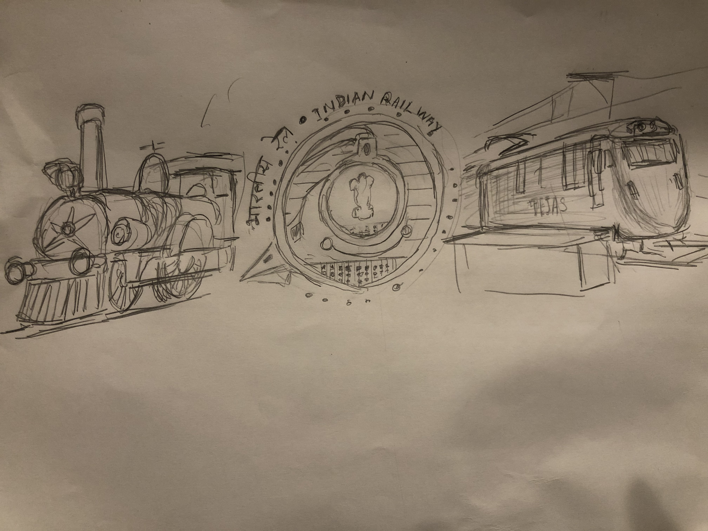
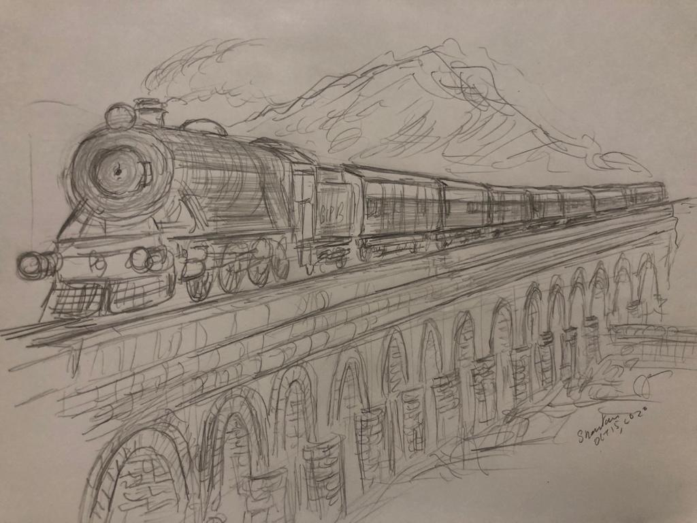
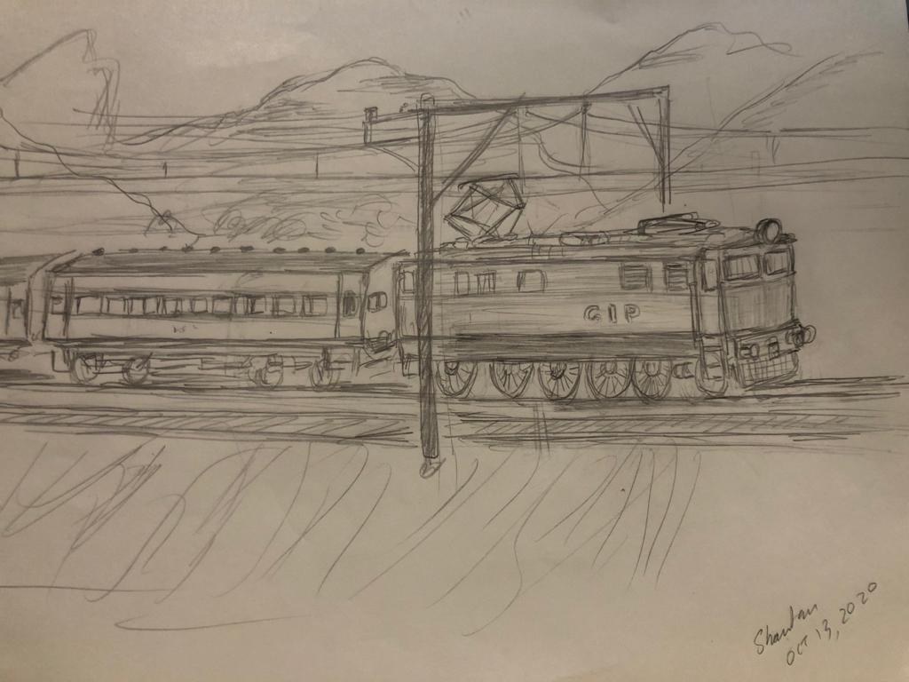
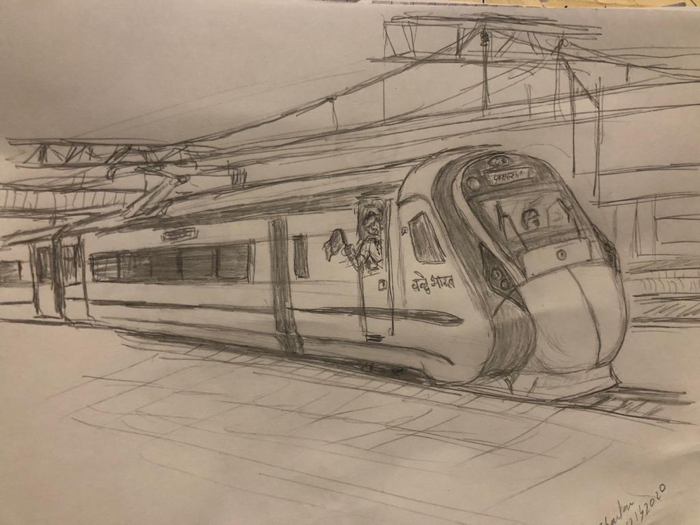

As I mentioned, I used to draw a lot of trains and planes.
Like many born and brought up in India, Indian Railways, the network, the trains, everything else
have been a part of our lives. I grew up with vaccations involving a lot of train travel. Here I have attempted to capture the essence of IR travel trying to capture iconic and historic trains from the past to the present of the Indian Railways
(The image below is the Indian Railways Emblem in the center. On the left is the 'Fairy Queen' IR steam locomotive c.a 1855 said to be the oldest operational loco in the world
On the right is a express locomotive concept WAP5 'Tejas' variant targetting 180 - 200 kph)

Below is a collection of all the drawings I present stitched together in one canvas - sort of like the sneak peek you get in a pictorial calendar. Each drawing follows..

The Punjab Mail - would ply from Mumbai(Bombay) to Peshawar. Post Independence (1947)
from Mumbai to Amristar.
Attempt below shows a 1912 scenario - the inaugural year of this legendary train - at Ballard Pier Station next to the Mumbai Docks where passengers from Steamers would directly board the train after having disembarked from their voyage
(The station no longer exists; the Mail now departs from what used to be known as Victoria, now Chhatrapati Shivaji, Terminus)
The Frontier Mail - like the above would ply from Mumbai(Bombay) to Peshawar. Post Independence (1947) from Mumbai to Amristar. Here, the attempted scene is 1928-1929 (The 'Mail was started in 1928) There is a hilly section in the Mumbai Delhi Route and this is known as the Dara Pass
Attempt to draw Deccan Queeen 1930 passing through the Western Ghats. This train was started 1930'ish and has always been hauled on regular basis by Electic locomotives
Taj Express Attempt - The background, scene, comtext are from imagination.
This train was started in 1964 as a fast between New Delhi and Agra. Typically one woould buy a tourist package - take this train from Delhi in the morning,
detrain at Agra and get onto a day tour of the Taj Mahal, Fatehpur Sikri and other tourist spots (Lunch included), then take the return back to Delhi late evening.
It was pulled by Steam locomotives (probably) for a long time even after
Diesel and Electric power was at hand on this route, as a sort of tradition
Mumbai Delhi Rajdhani Superfast capture attempt. This was one of the highest speed trains in India, plying between Mumbai and Delhi overnight.
This a (partly from imagination) 1980's - 1990's scenario where she was hauled by two coupled WDM2 Diesel Electric Locos - the train was 18 coaches long
Two famous trains started in the 1980s KK express (top, with couple WDM3a Diesels) connects New Delhi with Bangalore
GItanjali (bottom with WAP4 electric locomotive), Mumbai and Howrah
(This scenario is fictitious - the trains are not - a merge across different iterations of these trains, and a hypothetical meeting point
near Nagpur Central India which has a principal North-South East-West intersection.
The period of the original liveries - green and yellow/gold for 'KK' and some red/gold/yellow combo for the Gitanjali in all likelihood didnt have WDM3A or WAP4 out yet..)
Two types of trains introduced in the late 90s/ early 21st century
Shatabdi expresses (drawing on top) are high speed day trains. Typical top speeds are over 130 kph. The train here shown is pulled by a WAP5 electric loco capable of over 160 kph
Garib Rath (bottom) pulled here by a WDP4 Diesel passenger loco. Garib Rath ('Poor Chariot') provides luxury facilities for low income people
(This scenario is completely fictitious - though not the trains, engine and rake for the generation attempted - scene of the bridge, river etc.
VandeBharat. The latest in Inter City travel. This is a multi unit train and can go upto speeds of 180 kph
Previous Next